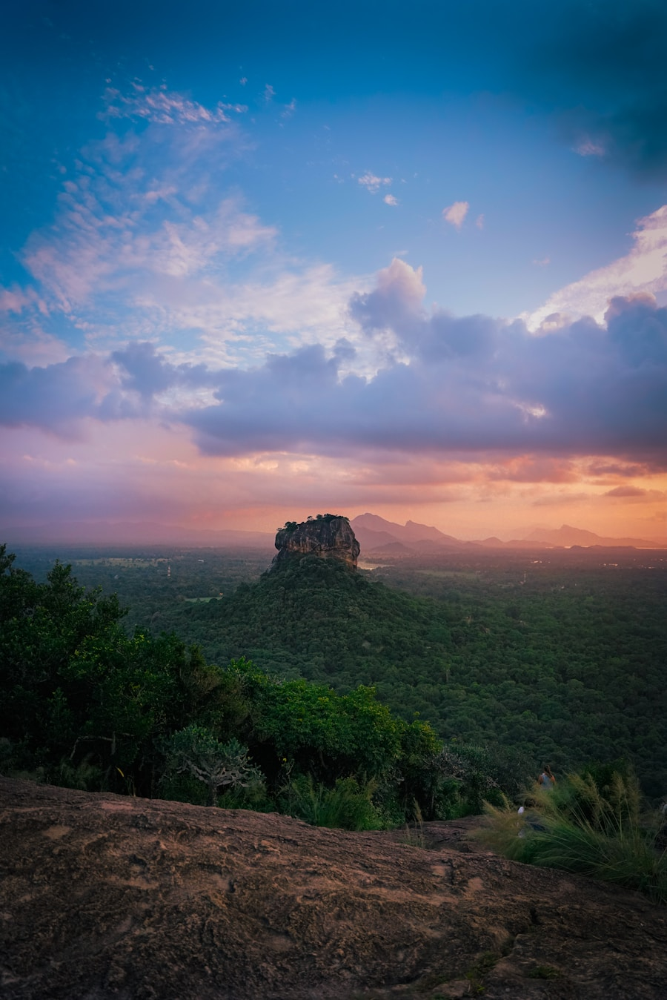
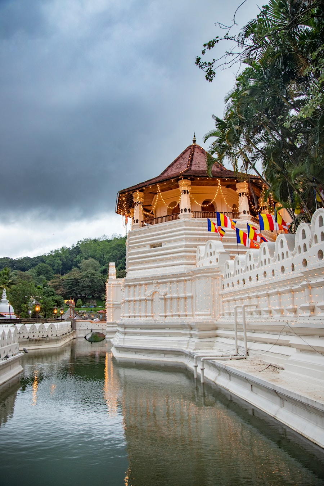
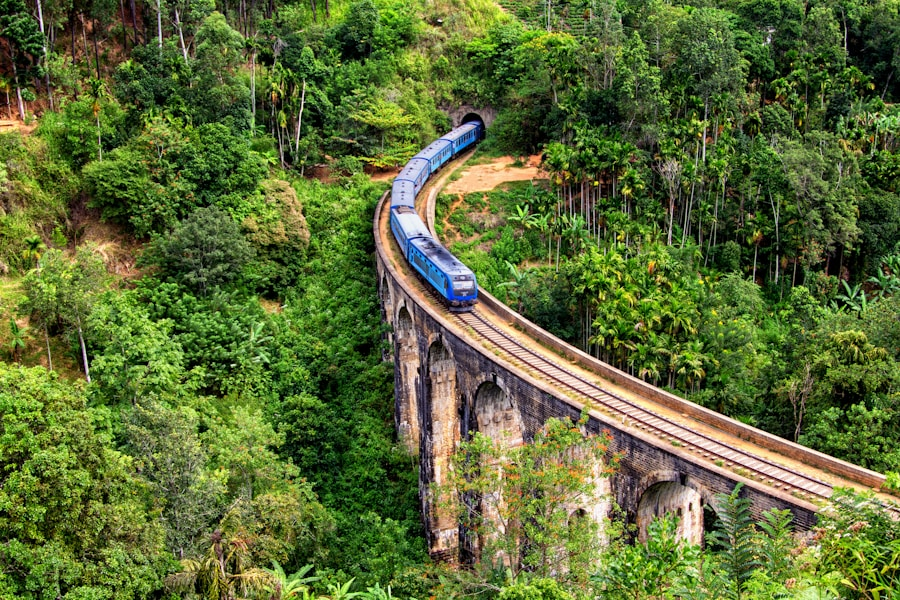
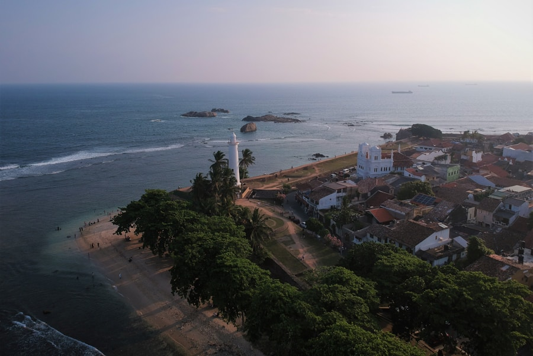
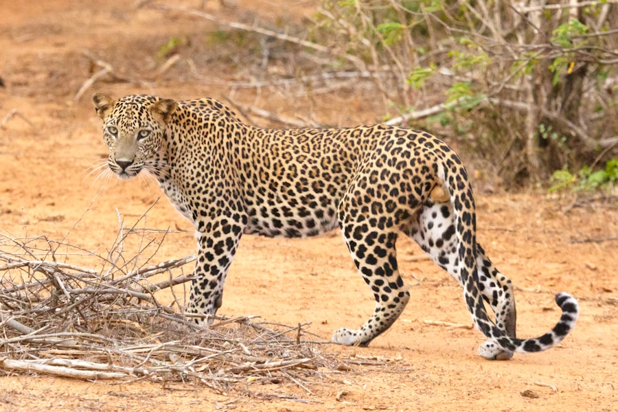
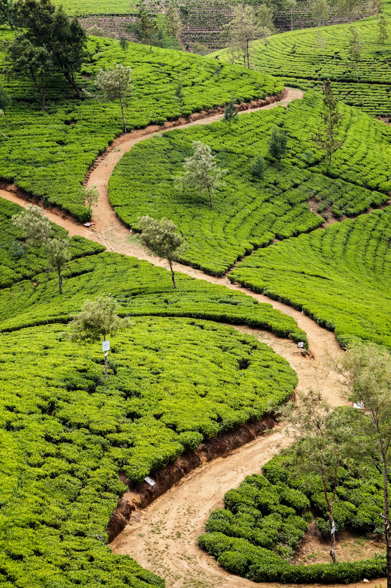
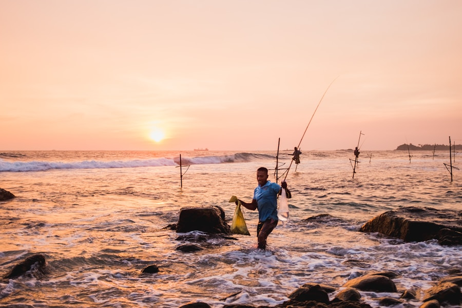

Five breathtaking landscapes that define the Sri Lankan experience — from ancient rock fortresses to wild national parks.
Click any destination to discover what awaits you.







👋 Hi there! Planning a Sri Lanka trip? We're here to help!